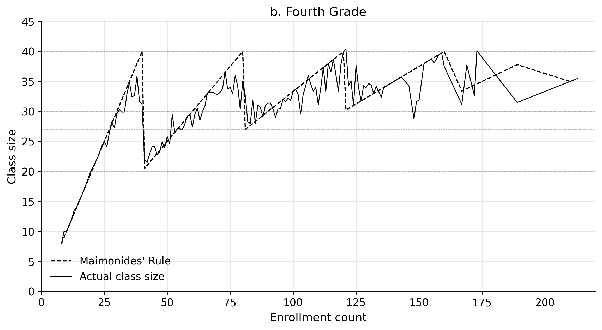
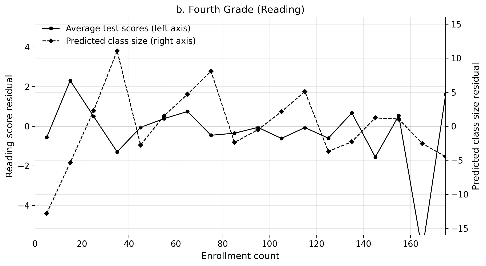

Replication of Angrist and Lavy (1999)
Using Maimonides’ Rule to Estimate the Effect of Class Size on Student Achievement
Introduction
Do smaller classes help students learn? The intuitive answer is yes, but measuring the causal effect turns out to be surprisingly hard. Schools with smaller classes are often different in many other ways — they may be located in wealthier neighborhoods, have more experienced teachers, or attract more motivated parents. A naive comparison of students in large vs. small classes will therefore confound the effect of class size with these other differences.
Angrist and Lavy (1999) solve this identification problem using Maimonides’ Rule, a twelfth-century Talmudic principle that caps class size at 40 students. Since 1969, Israeli public schools have been required to follow this rule. As a result, when grade enrollment rises from 40 to 41, the school must split one class into two — and average class size drops sharply from around 40 to around 20. The same discontinuity repeats at 80, 120, and so on. The paper’s identifying idea is that schools whose enrollment lands just above or below the 40, 80, and 120 cutoffs should be comparable after controlling for smooth relationships between enrollment and outcomes. That claim is plausible, but it is still an assumption rather than something the data can prove directly. Angrist and Lavy argue that manipulation is limited because students typically attend neighborhood schools and schools cannot perfectly fine-tune September enrollment, though they are careful not to treat this as automatic random assignment.
This creates a fuzzy regression-discontinuity (RDD) design. The “fuzziness” arises because actual class size doesn’t follow Maimonides’ Rule perfectly (some schools can afford extra classes early; enrollment sometimes falls between September and spring), but predicted class size — computed mechanically from September enrollment and the rule — jumps sharply at the cutoffs. Using predicted class size as an instrument for actual class size lets the authors estimate class-size effects under the assumption that any other effect of enrollment on achievement is smooth enough to be captured by the controls.
This replication focuses on the fourth-grade results. I reproduce:
- Figure 1, panel b — the visual first stage showing actual vs. predicted class size by enrollment
- Table II, columns 7 and 10 — the naive (biased) OLS estimates
- Table III, panel A, columns 7, 9, and 11 — the reduced-form RDD estimates for fourth graders
As my additional contribution, I replicate the spirit of Figure 3b from the paper — plotting detrended average reading scores and predicted class size by enrollment bin — to show visually how the identifying variation works. I then bring everything together in a single comparison table showing how the naive vs. RDD estimates differ. I treat this figure as supportive visual evidence, not as a standalone proof of causality.
Figure 1, Panel b — The Visual First Stage
Before any regression, the paper establishes visually that Maimonides’ Rule actually shifts class sizes. The figure below plots average actual class size (solid line) and Maimonides-predicted class size (dashed) for each fourth-grade enrollment count.
The key feature is the sawtooth pattern: class size climbs as enrollment grows, then drops sharply when enrollment hits a multiple of 40. Actual class size tracks the prediction closely, though imperfectly (schools sometimes add a class before reaching 40, and enrollment can change between September and spring). This imperfect compliance is why the design is “fuzzy” — and why an IV/RDD approach is needed.
The plot closely matches Figure 1b from the paper. Average class size drops noticeably at enrollment = 40, 80, and 120, exactly where Maimonides’ Rule predicts it should. This is strong visual evidence for the first stage, though the later causal interpretation still depends on the paper’s smoothness and no-precise-manipulation assumptions.
Table II, Columns 7 and 10 — Naive OLS (The Biased Baseline)
The paper’s first estimator is deliberately naive: regress average test scores on actual class size with no controls. The results are striking for the wrong reason.
A brief replication note: throughout, I aim for the paper’s published coefficients as the main benchmark. Because the original article uses a Moulton correction implemented in Stata code, my school-clustered Python standard errors should be read as close approximations rather than exact matches.
Table II — Naive OLS: effect of class size on 4th-grade scores
===========================================================================
Replication coef. Replication SE Paper coef. Paper SE N
Reading (col 7) 0.141 (0.035) 0.141 (0.033) 2049
Math (col 10) 0.221 (0.039) 0.221 (0.036) 2049
Controls: none. Dependent variable = average class score.
Standard errors clustered by school (Moulton correction in paper).Both coefficients are positive: a one-student increase in class size is associated with a 0.14-point higher reading score and a 0.22-point higher math score. My point estimates match the paper essentially exactly here. Taken at face value, this would suggest bigger classes help students — an implausible conclusion.
The reason is omitted-variable bias. In Israel, larger schools tend to be in wealthier urban areas with better-educated families. Students in those schools score higher for reasons unrelated to class size. When we compare a large-enrollment school to a small one, we’re also comparing richer to poorer neighborhoods. The positive OLS coefficient captures this socioeconomic gradient, not a true class-size effect.
Table III, Panel A, Columns 7, 9, 11 — Reduced-Form RDD Estimates
The paper’s reduced-form approach replaces actual class size with func1, the class size predicted by Maimonides’ Rule. This variable is a deterministic function of September enrollment, so it is free of the within-school selection that biases OLS. The regressions control for the percent-disadvantaged index (tipuach) to absorb the socioeconomic trend.
Table III Panel A — Reduced-form RDD: effect of predicted class size
===========================================================================
Replication coef. Replication SE Paper coef. Paper SE N
Class size (col 7) 0.772 (0.023) 0.772 (0.020) 2049
Reading (col 9) -0.085 (0.031) -0.085 (0.031) 2049
Math (col 11) 0.038 (0.040) 0.038 (0.037) 2049
Regressor = func1 (Maimonides-predicted class size).
Controls: percent disadvantaged (tipuach).
Standard errors clustered by school.Three things stand out. Here I focus primarily on matching the paper’s point estimates; my standard errors are only an approximation to the paper’s published corrections:
- The first stage is strong (col 7): a one-unit increase in predicted class size raises actual class size by 0.77 students. The instrument is powerful.
- Reading flips sign (col 9): the reduced-form coefficient on
func1is -0.085, meaning higher predicted class size is associated with lower reading scores. This is the causal direction. - Math is near zero (col 11): +0.038, not significantly different from zero. Class size effects on 4th-grade math are weak.
Additional Analysis: Seeing the Discontinuity — Replicating Figure 3b
The reduced-form table tells us the sign and magnitude of the effect, but the figure below makes the mechanism visible. Following the paper’s Figure 3b, I:
- Bin enrollment into 10-student intervals.
- Within each bin, regress average reading scores on percent disadvantaged and enrollment, keeping residuals.
- Do the same for predicted class size (
func1). - Plot the two residual series together.
If Maimonides’ Rule is actually driving test scores, the residuals should trace mirror images: when predicted class size goes up (in the right half of each segment), reading scores should go down — and vice versa at each discontinuity.

The plot shows an approximate mirror-image relationship: bins where predicted class size rises tend to have lower reading scores, and vice versa. This up-and-down pattern — tracking the sawtooth of Maimonides’ Rule — is consistent with the paper’s identification story. Still, I interpret it cautiously: the figure is suggestive because it is hard to think of another mechanism that would generate the same zigzag, but it does not by itself rule out every alternative explanation.
Putting It Together: Naive OLS vs. RDD
The table below summarizes what changed when we moved from the biased baseline to the quasi-experimental reduced-form design.
Summary: Naive OLS vs. Reduced-Form RDD — 4th Grade
==============================================================================
Estimator Outcome Coefficient Interpretation
Naive OLS (Table II) Reading 0.141 ↑ Biased positive (SES confounding)
Naive OLS (Table II) Math 0.221 ↑ Biased positive (SES confounding)
Reduced-form RDD (Table III) Reading -0.085 (on func1) ↓ Negative (causal direction)
Reduced-form RDD (Table III) Math 0.038 (on func1) ≈ Zero (no 4th-grade math effect)
Implied Wald ratio Reading -0.110 -0.110 per pupil
Implied Wald ratio Math 0.049 +0.049 per pupil (n.s.)The final two rows are simple Wald ratios from the reduced form and first stage, included as an interpretive bridge to the paper’s IV results.
What changed and why:
The naive OLS coefficient on class size is positive for both reading and math. This is not persuasive evidence that bigger classes help; it more likely reflects the fact that larger schools tend to be in richer areas where students do better for reasons unrelated to class size.
Once I use Maimonides’ Rule to isolate plausibly exogenous variation in class size, the picture changes. The reduced-form reading coefficient is negative: a higher Maimonides-predicted class size is associated with lower reading achievement. Dividing by the first-stage coefficient gives a back-of-the-envelope Wald estimate of -0.110 per additional student in the class. That lines up with the paper’s IV results, but I view it as a useful cross-check rather than a full replication of the 2SLS table.
For math, neither the reduced-form coefficient nor the implied Wald ratio is significantly different from zero. The paper’s authors note this explicitly: class-size effects for 4th graders appear to be concentrated in reading, not math.
Why might the RDD support a causal interpretation? The key assumption is that, after controlling for smooth enrollment effects, being just above or below 40, 80, or 120 is not systematically related to other determinants of student outcomes. The paper argues that schools cannot precisely control September enrollment to exploit the rule, and Israeli families are generally required to attend neighborhood schools. That makes the discontinuities plausibly exogenous locally around each cutoff, but this remains an identifying assumption rather than a fact I can verify directly from the replication alone.
Conclusion
This replication reproduces the main fourth-grade findings of Angrist and Lavy (1999) well on the dimensions emphasized in the assignment. In particular, the point estimates in Table II and Table III match the published results very closely. The substantive takeaway is also the same: the naive OLS estimate of class-size effects is upward biased because of socioeconomic sorting, while the regression-discontinuity/IV strategy points to a negative effect on reading scores for fourth graders and little evidence of an effect on math. I would phrase that conclusion carefully: the design is more credible than a simple cross-school comparison because it uses discontinuities generated by Maimonides’ Rule, but its causal interpretation still depends on the paper’s smoothness assumptions.
A note on standard errors and exact replication. The paper uses a Moulton (1986) correction for within-school clustering that differs from the conventional clustered standard errors I compute in Python. For that reason, I treat the point estimates as the main replication target and the standard errors as approximate rather than exact. Where I report implied IV/Wald estimates, I use them as transparent summaries of the reduced form and first stage, not as substitutes for the paper’s full 2SLS procedure.